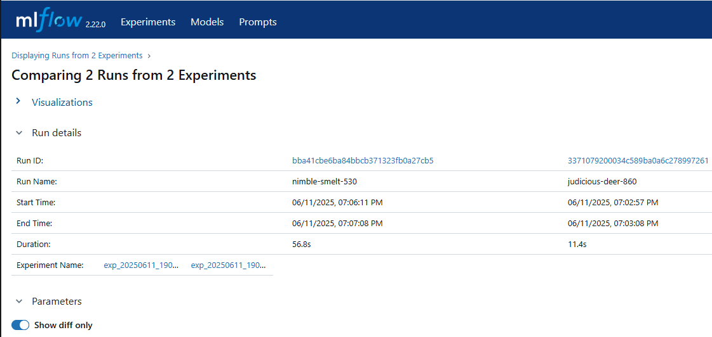

Control de Versiones del Modelo
Hasta este momento, se ha utilizado DVC (Data Version Control) como parte fundamental del flujo MLOps para versionar datasets, mantener un control detallado sobre los modelos entrenados y estructurar un pipeline reproducible mediante dvc.yaml. Esta herramienta ha sido clave para asegurar la trazabilidad de los datos y el control sobre los artefactos generados durante el desarrollo.
Sin embargo, cuando se trata de realizar múltiples experimentos, comparar resultados entre ejecuciones o registrar métricas y parámetros de manera organizada, DVC presenta limitaciones. No está diseñado específicamente para gestionar experimentos en detalle ni para proporcionar una visualización clara de su evolución. En este contexto, se vuelve necesario incorporar una herramienta que permita complementar este control con capacidades de seguimiento más ricas.
MLflow cumple precisamente este propósito. Es una herramienta que se integra fácilmente en el flujo de trabajo existente y permite registrar, comparar y visualizar los experimentos de machine learning. Su inclusión dentro del proceso MLOps permite documentar automáticamente los parámetros usados, las métricas obtenidas y los modelos generados, facilitando la comparación entre experimentos y mejorando la capacidad de análisis.
Por tanto, mientras DVC se encarga de mantener el control sobre los datos y asegurar la reproducibilidad, MLflow se enfoca en el seguimiento de los experimentos y la gestión de resultados. El uso conjunto de ambas herramientas aporta una solución más completa para desarrollar, evaluar, mantener y monitorear modelos de machine learning de forma robusta y escalable.
IMPORTANTE
MLflow permite monitorear y registrar el comportamiento de los modelos durante la etapa de experimentación, facilitando la comparación de resultados, el análisis de métricas y la trazabilidad del proceso de entrenamiento.
La herramienta tiene cuatro componentes principales, y uno de ellos —MLflow Tracking— permite monitorear el proceso de entrenamiento de modelos, registrando:
- Parámetros usados en cada experimento
- Métricas obtenidas
- Artefactos generados (modelos, gráficos, logs)
- Versiones de código y entorno
Si se desea monitorear el modelo en producción se suelen usar herramientas como Prometheus, Grafana, EvidentlyAI o Seldon Core, integradas en un stack de MLOps más completo.
🎯 Objetivo
Complementar el flujo de trabajo MLOps basado en DVC con el uso de MLflow para llevar un seguimiento sistemático de experimentos, incluyendo parámetros, métricas y versiones de modelos.
Instalación de MLflow
Para comenzar a usar MLflow en tu entorno de desarrollo, puedes instalarlo fácilmente utilizando pip o conda, según cómo estés gestionando tus entornos. Puedes instalar MLflow ejecutando uno de los dos comandos:
conda install -c conda-forge mlflow
pip install mlflow
Una vez instalado, puedes verificar su disponibilidad ejecutando el siguiente comando en la terminal:
mlflow --version
Modelo Base
En el contexto de nuestro proyecto, el código para entrenar el modelo de predicción se encuentra en el archivo src/model_eng/stage_1_2_train_evaluate.py, el cual corresponde a la etapa entrenamiento_evaluacion definida en el flujo de trabajo con DVC. Esta etapa se encarga de ejecutar el proceso de entrenamiento y evaluación del modelo utilizando scikit-learn. Para complementar el control de versiones y reproducibilidad que ofrece DVC, vamos a extender este script incorporando el registro de experimentos con MLflow, lo que permitirá llevar un seguimiento detallado de los modelos, los parámetros utilizados y los resultados obtenidos.
A este código base se han incorporado las siguientes instrucciones clave:
-
Importaciones necesarias: Se incluyen las bibliotecas de
mlflow,mlflow.sklearny la funcióninfer_signature, que se utiliza para capturar la estructura de entrada y salida del modelo (por ejemplo, columnas y tipos de datos) al momento de registrarlo en MLflow. Esto permite que, al guardar el modelo conmlflow.log_model(), MLflow registre también la firma (signature) del modelo, lo cual facilita futuras validaciones automáticas al momento de reutilizar o desplegar el modelo.import mlflow import mlflow.sklearn from mlflow.models import infer_signature -
Definición del experimento: Dentro de la función
def model_eval()se establece el nombre del experimento, lo que permite organizar y visualizar fácilmente los distintos modelos entrenados dentro de la interfaz de MLflow. Cada ejecución del script se registrará como una "run" dentro del experimento definido, permitiendo comparar configuraciones e identificar la mejor versión del modelo.Cabe destacar que, en nuestro proyecto, el nombre del experimento se genera de forma dinámica, incorporando la fecha y hora actuales.mlflow.set_experiment(exp_name) -
Ejecución de una "run" con
mlflow.start_run(): Para que MLflow registre los detalles de un experimento, es necesario encapsular el bloque de código correspondiente dentro demlflow.start_run(). Esta función crea una nueva ejecución ("run") dentro del experimento activo. Dentro de este bloque se colocan todas las instrucciones que se desean registrar: los parámetros del modelo (mlflow.log_param()), las métricas obtenidas (mlflow.log_metric()), y el propio modelo (mlflow.sklearn.log_model()). Al finalizar el bloque, MLflow cierra automáticamente la ejecución y registra los resultados.
Identifica este código (más adelante) en el archivo stage_1_2_train_evaluate.py actualizado.
Uso de MLflow: ejecución local vs. servidor de tracking
MLflow fue diseñado para adaptarse a distintos niveles de madurez en los proyectos de Machine Learning. Por eso, ofrece dos formas principales de ejecutar y registrar experimentos: una ejecución básica y automática a nivel local, y otra más avanzada y centralizada a través de un servidor de tracking.
¿Por qué existen estas dos opciones?
En un flujo típico de desarrollo MLOps, los requerimientos cambian con el tiempo:
-
Al inicio, un desarrollador puede trabajar de forma individual, experimentando rápidamente con distintos modelos y parámetros. En este contexto, tener que levantar un servidor para registrar cada experimento sería innecesario y poco práctico. Por eso, MLflow permite registrar y visualizar experimentos directamente en el sistema de archivos local, sin necesidad de configuración adicional.
-
A medida que el proyecto avanza, se vuelve necesario compartir experimentos, mantener un historial organizado, o integrar con herramientas externas para despliegue y monitoreo. En este escenario, MLflow permite ejecutar un servidor local (o remoto) de tracking, donde los experimentos pueden ser almacenados de forma centralizada y accesibles por varios usuarios o procesos.
Estas dos opciones permiten que el uso de MLflow escale progresivamente desde un entorno personal hasta un entorno colaborativo y reproducible, alineado con los principios de MLOps.
🔹 Opción A: Uso local (archivo tracking por defecto)
En esta opción, MLflow guarda automáticamente los experimentos en una carpeta local llamada mlruns, sin necesidad de configurar un servidor. Es el comportamiento por defecto cuando no se especifica ninguna URI de tracking.
Características:
- No requiere configuración adicional.
- Los datos se almacenan en el sistema de archivos local.
- Ideal para uso individual y pruebas rápidas.
- Experimentos visibles ejecutando
mlflow uien la misma máquina.
Etapa recomendada:
-
Etapas tempranas del proyecto o desarrollo personal, cuando estás iterando en el modelo y probando configuraciones de manera local.
-
Útil para experimentar de forma ágil sin preocuparte aún por colaboración o despliegue.
Parámetros relevantes:
- No es necesario usar
mlflow.set_tracking_uri(). - El directorio
mlruns/aparece automáticamente al ejecutar cualquier experimento.
🛠️ Tarea
- Descarga la versión del script
stage_1_2_train_evaluate.pyy actualiza este codigo en tu proyecto. -
Revisa el código e identifica las secciones incorporadas para el uso de MLflow. En particular, ubica el uso de los siguientes métodos:
-
mlflow.set_tracking_uri(): no es necesario utilizarlo en el caso de uso local, por lo que esta línea esta documentada en el código, como referencia para configuraciones más avanzadas con un servidor de tracking. -
mlflow.log_params(): para registrar los parámetros utilizados durante el entrenamiento. -
mlflow.log_metric(): para almacenar métricas de evaluación del modelo. -
mlflow.sklearn.log_model(): para guardar el modelo entrenado dentro del sistema de tracking de MLflow. Ten en cuenta que durante la etapa de desarrollo no siempre es necesario registrar el modelo completo en cada ejecución. Si lo consideras conveniente, puedes comentar temporalmente esta línea para evitar almacenar múltiples versiones del modelo.
-
-
Ejecuta nuevamente los dos experimentos realizados en la práctica Trabajando con Pipelines, entonces compara los resultados llamando a la interfaz Web de MlFlow.
Abre con:
Dentro de la herramienta MLFlow compara los resultados de los dos experimentos mostrando los detalles de la ejecución:mlflow ui
🔹 Opción B: Uso con servidor de tracking
Aquí se lanza un servidor de tracking de MLflow que actúa como backend centralizado, usando una base de datos (como SQLite, PostgreSQL, etc.) y un almacenamiento definido para los artefactos.
Características:
- Requiere ejecutar mlflow server con parámetros específicos.
- Permite consultas más robustas y almacenamiento estructurado.
- Facilita la colaboración en equipo y organización de múltiples experimentos.
- Puedes conectarte desde distintos scripts o máquinas (si configuras acceso por red).
Etapa recomendada:
-
Etapas intermedias o avanzadas del proyecto, cuando ya estás trabajando con varios experimentos, varios miembros del equipo, o cuando necesitas mantener un historial más persistente y ordenado de los modelos.
-
Muy útil antes del despliegue o al comenzar evaluaciones comparativas
Parámetros relevantes al lanzar el servidor: Para iniciar el servidor de MLflow con una configuración mínima, puedes ejecutar el siguiente comando desde una nueva terminal. Debes usar estos comandos más adelante cuando se te pida ejecutar la tarea:
mlflow server \
--backend-store-uri sqlite:///mlflow.db \
--default-artifact-root ./mlruns \
--host 127.0.0.1 \
--port 5000
Y en tu script debes especificar la URI del tracking (descomenta la línea que ya existe en el código):
mlflow.set_tracking_uri(config.mlflow.tracking_uri)
🛠️ Tarea
-
Elimina la carpeta
mlrunsque se generó al ejecutar MLflow de forma local. A partir de ahora, al ejecutar los experimentos, los resultados deberían almacenarse directamente en la base de datos gestionada por el servidor de MLflow. -
Agrega los siguientes parámetros en el archivo de configuración
model_eng.yamlmlflow: mlruns_path = "models" tracking_uri = "http://127.0.0.1:5000" -
Configura el uso de MLFlow con servidor de tracking. Para ello recuerda ejecutar estas acciones en el siguiente orden:
- Inicia el servidor de MLFlow
- Descomenta la linea que define la URI del tracking server en el archivo
stage_1_2_train_evaluate.py.
-
Vuelve a ejecutar los dos experimentos realizados en la práctica Trabajando con Pipelines. Modifica al menos un parámetro en cada experimento para forzar su reejecución. Si es necesario, cambia también el nombre del experimento. Luego, compara los resultados obtenidos directamente en el servidor de MLflow.
Resumen del uso de MLFlow
MLflow permite registrar y visualizar experimentos, ya sea de forma local (Opción A) o mediante un servidor de tracking dedicado (Opción B), según las necesidades del proyecto.
| Aspecto | Opción A: Uso local | Opción B: Servidor tracking |
|---|---|---|
| Configuración | Ninguna | Requiere levantar servidor |
| Persistencia | Carpeta local (mlruns) |
Backend + almacenamiento definido |
| Colaboración | Limitada | Posible si se configura acceso remoto |
| Escalabilidad | Baja | Alta (puede migrar a servidor remoto) |
| Etapa recomendada | Inicial / desarrollo personal | Intermedia / colaborativa / producción |
set_tracking_uri necesario |
No | Sí |